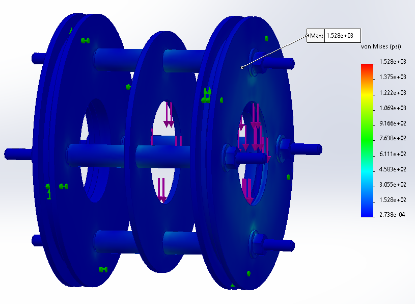
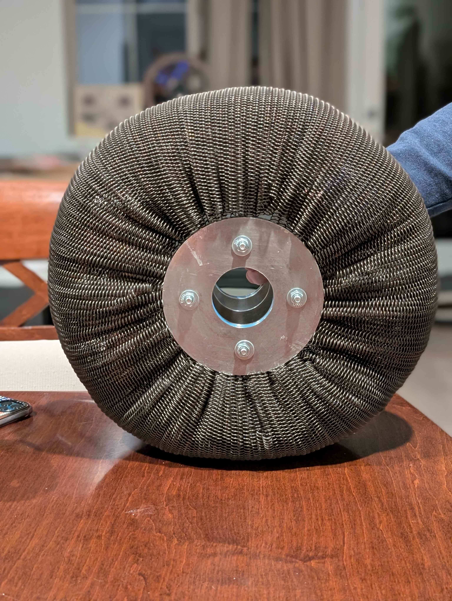

Airless Spring Tire System (Senior Capstone)
Designed, manufactured, and experimentally evaluated an airless spring tire inspired by limited public research (NASA Glenn/Goodyear + a small number of PhD theses) for potential next-generation rover mobility.
Context
Airless spring tire architectures are being explored for harsh, remote environments where conventional wheel/tire designs can deteriorate and cause mission-limiting failures. Publicly available work is limited, making this a highly experimental undergraduate build-and-test effort.
My Role
- Primary liaison with faculty advisor and manufacturing technician
- Led spring design calculations, material selection, and stiffness modeling
- Performed FEA and evaluated stiffness + weight capacity
- Co-led manufacturing and assembly with project partner
Team size: 2 engineers
Constraints
- Budget: $500 target
- Environment: materials suitable for harsh extraterrestrial conditions
- Mass: weight considered during selection and geometry design
- Manufacturing safety: constrained by available equipment and safe processes
- Performance target: 75 lb load capacity
Tools & Methods
SolidWorks Manufacturing drawings FEA Hand calcs Excel iteration Testing Assembly jig
- Test data compiled and graphed in Excel to estimate theoretical maximum deflections
Engineering Work
- Developed spring-based load-bearing architecture and estimated system stiffness
- Iterated materials and geometry for stiffness, durability, and manufacturability
- Evaluated hub assembly load paths using FEA
- Designed and fabricated a custom jig to control spring placement and alignment
- Conducted load–deflection testing to validate analytical and simulated results
Results
- Max supported load: ~70 lb
- Deflection at load: ~4 in
- Global stiffness: 22.6 lb/in
- Individual spring stiffness: 0.106 lb/in
- Stiffness delta: ~44% vs manufacturer spring data due to assembly geometry + interaction
- Cost: tire assembly under $500; including the custom jig increased total cost by ~10%
Challenge & Fix
Early stiffness predictions were off due to complex geometry and spring-count estimation. Assembly methods and analytical assumptions were updated mid-build to better capture system-level interaction effects.
Status: manufactured, tested, evaluated, completed
Takeaway
System-level behavior (geometry + interaction) can dominate component datasheet properties—testing + iteration closed the loop between theory, simulation, and reality.

